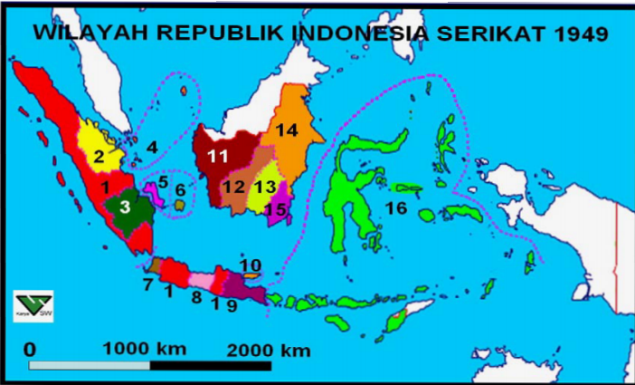
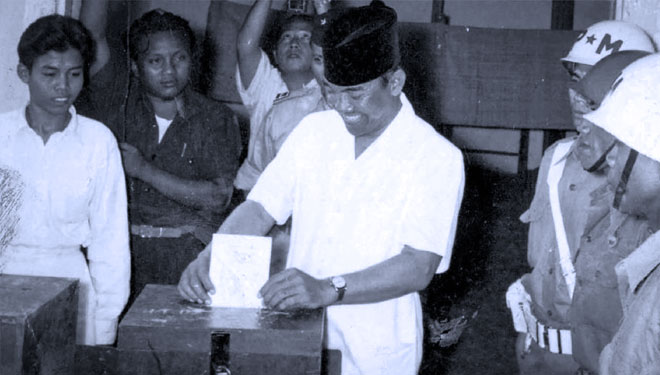
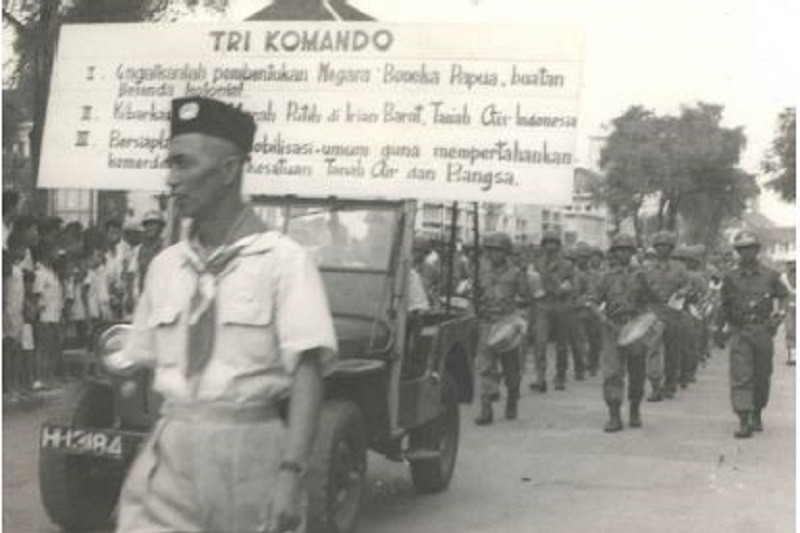
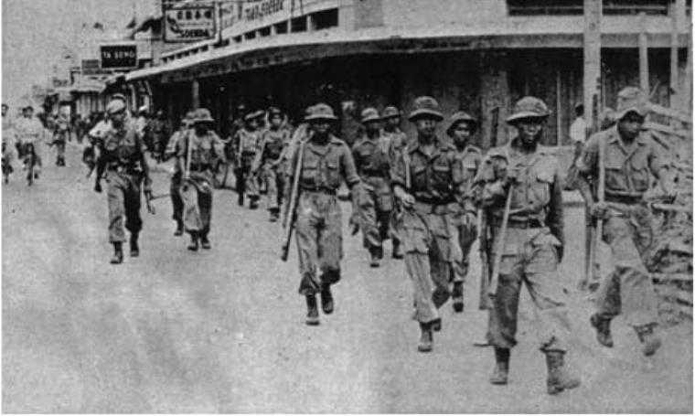
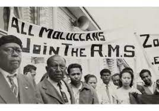
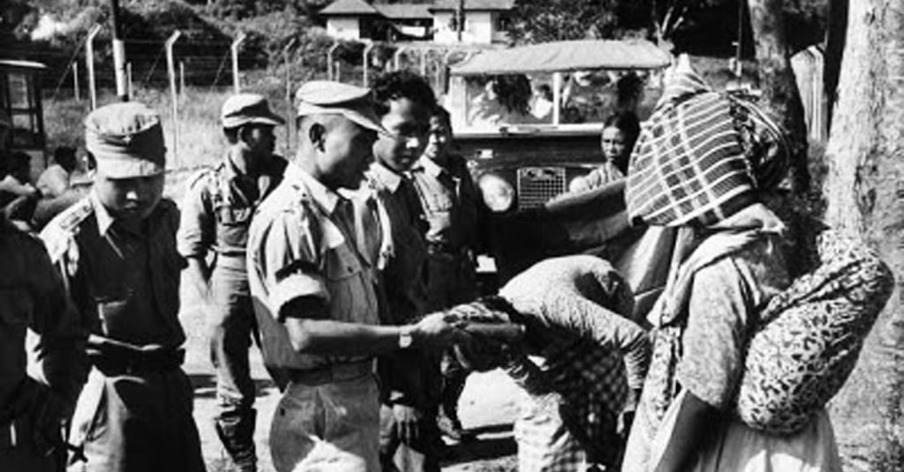
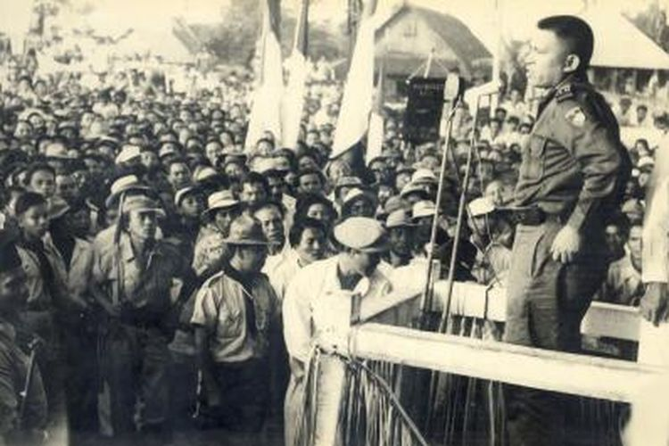
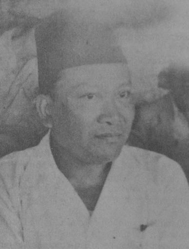

Negara-negara boneka bentukan Belanda terdiri dari enam negara bagian dan sembilan satuan kenegaraan/daerah otonom. Melalui pembentukan negara boneka itu, Belanda mempersiapkan negara federal, Negara Indonesia Serikat. Dengan terbentuknya, negara-negara boneka, RI dan negara bagian akan mudah diadu domba (devide et impera) oleh Belanda.

Pembagian Negara ketika Indonesia merupakan Negara Federal
Pada tanggal 27 Desember 1949 dilaksanakan pengakuan kedaulatan Indonesia dalam bentuk negara federal, Republik Indonesia Serikat (RIS) di Den Haag, Belanda. Namun, kemudian rakyat Indonesia menyadari bahwa negara Ris tidak sesuai cita-cita bangsa Indonesia yaitu Persatuan dan Kesatuan. Negara RIS hanyalah boneka yang dikendalikan oleh Belanda.
Dari kesadaran itu, negara-negara bagian dan satuan kenegaraan menuntut penggabungan dengan negara RI untuk kembali ke negara kesatuan.Oleh karena itu, pada 8 Maret 1950 Pemerintah RIS mengeluarkan UUD Darurat No. 11 Tahun 1950 tentang Tata Cara Perubahan Susunan Kenegaraan RIS. Sampai 5 April 1950, negara RIS hanya tinggal tiga negara bagian: RI, NST, dan NIT.
Pada 19 Mei 1950, dilakukan perundingan antara Pemerintah RIS diwakili Drs. Moh. Hatta dan Pemerintah RI diwakili Abdul Halim. Dikeluarkan kesepakatan yang tertuang dalam piagam persetujuan:
- RIS dan RI membentuk negara kesatuan berdasarkan proklamasi kemerdekaan 17 Agustus 1945.
- RIS dan RI membentuk panitia yang bertugas menyusun undang-undang dasar negara kesatuan.
Kemudian, dibentuk panitia gabungan RIS-RI untuk menyusun konstitusi negara kesatuan baru. Kedua pemerintahan menyepakati rancangan naskah undang-undang dasar negara kesatuan. Lalu pada 14 Agustus 1950, Parlemen RI dan Senat RIS mengesahkan Rancangan UUD NKRI (UUDS 1950).
Presiden RIS Ir. Soekarno membacakan piagam terbentuknya Negara Kesatuan Republik Indonesia (NKRI) dan berlaku sejak 17 Agustus 1950.Sejak 17 Agustus 1950 pula, negara RIS bubar dan kembalilah Negara Kesatuan Republik Indonesia (NKRI).
2) Pemilihan Umum Pertama RI Tahun 1955
Rakyat Indonesia frustasi melihat kepincangan politik di mana beberapa partai politik hanya mementingkan golongan sendiri. Karena itu, rakyat menuntut diadakannya pemilihan umum.
Persiapan pemilu dirintis Kabinet Ali I. Pemilu pertama berlangsung dalam dua tahap, yaitu:
- 29 September 1955 untuk memilih anggota DPR.
- 15 Desember 1955 untuk memilih anggota Konstituante.

Pemilu Pertama di Indonesia
3) Dekrit Presiden 5 Juli 1959 dan Pengaruh yang ditimbulkannya
Lembaga Konstituante yang dibentuk berusaha keras menjalankan tugas sebaik mungkin. Akan tetapi, lembaga tersebut tidak berhasil menyelesaikan tugasnya sehingga dibentuk dekrit presiden.
Upaya Konstituante Menyusun UUD Konstitusi dipilih rakyat untuk merancang UUD baru pengganti UUDS 1950. Ternyata, Konstituante belum berhasil merumuskan UUD yang diharapkan.
Kalangan masyarakat dan kalangan lain banyak berpendapat untuk kembali kepada UUD 1945. Akhirnya, Presiden Soekarno menyampaikan amanat dalam sidang Konstituante pada 25 April 1959 untuk kembali ke UUD 1945.
Pada 30 Mei 1959, Konstituante melaksanakan pemungutan suara atas amanat presiden. Pemungutan suara dilakukan dua kali, tetapi Konstituante kembali gagal mencapai dua pertiga suara yang dibutuhkan.
Kegagalan Konstituante menetapkan UUD baru sangat membahayakan kelangsungan negara. Ketidakstabilan negara terjadi karena negara tidak memiliki pedoman konstitusi yang jelas.
Pada 3 Juni 1959, Penguasa Perang Pusat, Letjen A.H. Nasution atas nama pemerintah mengeluarkan peraturan yang melarang kegiatan politik. Ini bertujuan untuk mencegah ekses-ekses yang membahayakan negara.
Dekrit Presiden 5 Juli 1959
Presiden Soekarno mengeluarkan dekrit yang diumumkan dalam upacara resmi di Istana Merdeka pada 5 Juli 1959 pukul 17.00. Isi Dekrit Presiden 5 Juli 1959, yakni:
1.Menetapkan pembubaran Konstituante.
2.Menetapkan Undang-Undang Dasar 1945 berlaku lagi bagi bangsa Indonesia.
3.Pembentukan MPRS dan DPAS dalam waktu yang sesingkat-singkatnya.
Mahkamah Agung lalu membenarkan dekrit tersebut. DPR dalam sidang 22 Juli 1959 secara aklamasi menyatakan bersedia untuk terus bekerja sama dengan berpedoman pada UUD 1945.

Pengaruh Lahirnya Dekrit Presiden 5 Juli 1959
Sejak diterapkannya Dekrit Presiden 5 Juli 1959, Indonesia mulai kembali menggunakan UUD 1945 dalam kerangka ‘Demokrasi Terpimpin’. Dikeluarkannya Dekrit Presiden disambut positif oleh rakyat Indonesia.
Menurut UUD 1945, Demokrasi Terpimpin mengandung pengertian bahwa kedaulatan harus dimaknai ada di tangan rakyat dan sepenuhnya dilakukan oleh MPR. Namun, makan itu ditafsirkan lain oleh pemerintah saat itu, Presiden Soekarno. Akibatnya, kekuasaan lebih banyak berpusat di tangan eksekutif (presiden) daripada kekuasaan lembaga legislatif (DPR).
Atas dasar peraturan negara baru dalam surat No. 2262/HK/59, presiden membentuk lembaga-lembaga negara seperti MPRS dan DPAS. Presiden Soekarno membentuk Majelis Permusyawaratan Rakyat Sementara (MPRS) melalui Penetapan Presiden No. 2 Tahun 1959. Antara tahun 1960-1965, MPRS melakukan 3 kali persidangan di Gedung Merdeka Bandung. Sidang-sidangnya, yaitu:
1.Sidang Umum pertama (10 November - 7 Desember 1960) menghasilkan Ketetapan MPRS Nomor I/MPRS/1960 tentang Manifesto Politik Republik Indonesia sebagai Garis-Garis Besar Haluan Negara. Kemudian, Ketetapan MPRS Nomor II/MPRS/1960.
2.Sidang Umum kedua (15-22 Mei 1963) menghasilkan Ketetapan MPRS Nomor III/MPRS/1963 tentang Pengangkatan Presiden Soekarno/Mandataris MPRS Menjadi Presiden Seumur Hidup.
3. Sidang Umum ketiga (11-16 April 1965) menghasilkan Ketetapan MPRS Nomor V/MPRS/1965 tentang pidato Presiden Soekarno, “Berdiri di atas Kaki Sendiri (Berdikari)” sebagai pedoman revolusi dan politik luar negeri Indonesia.
Presiden Soekarno membentuk Dewan Pertimbangan Agung Sementara (DPAS) berdasarkan Penpres No. 3 Tahun 1959. Tugas DPAS adalah memberi jawaban dari pertanyaan presiden dan mengajukan usul kepada pemerintah. DPAS dipimpin dan diangkat serta diberhentikan oleh presiden.
4) Perjuangan Bangsa Indonesia Merebut Irian Barat
Perjuangan Melalui Jalur Diplomasi
Akhir Maret 1950 pihak Indonesia dan Belanda melakukan Konferensi Uni Indonesia-Belanda di Jakarta untuk membahas masalah Irian Barat dan ketatanegaraan Indonesia. Konferensi ini tidak ada kesepakatan penyerahan Irian Barat.
Pada bulan Desember 1950, diadakan konferensi serupa di Den Haag, namun tidak menghasilkan titik temu. Pada Desember 1951 diadakan lagi konferensi. Hasilnya, tidak ada lagi perundingan bilateral dan masalah Irian Barat tetap berlanjut.
Sejak 21 September 1954 pemerintah Indonesia terus membawa masalah Irian Barat dalam forum Sidang Umum PBB. Namun, Belanda dan Sekutunya menjegal keinginan bangsa Indonesia. Oleh karena dalam sidang tidak pernah mencapai kuorum, sejak 10 Desember 1954, masalah Irian Barat bukan lagi urusan PBB.
Perjuangan Melalui Jalur Konfrontasi
Dalam upaya pembebasan Irian Barat, Indonesia menyatakan pembubaran Uni Indonesia-Belanda pada 10 Agustus 1954. Sikap konfrontasi dilanjut dengan pernyataan pembatalan perjanjian KMB. Selanjutnya, hubungan Indonesia dengan Belanda adalah hubungan yang lazim antar negara.
Selain itu, pada 4 Agustus 1956 pemerintah RI secara sepihak menolak mengakui hutang negara seperti yang ditetapkan dalam KMB. Dalam suasana anti-Belanda, pada 18 November 1957 diselenggarakan rapat umum pembebasan Irian Barat di Jakarta yang membicarakan langkah serta tindakan yang perlu diambil guna membebaskan Irian Barat.
Rapat umum pembebasan Irian Barat ditindaklanjuti dengan munculnya aksi mogok para buruh terhadap perusahaan Belanda. Pemerintah RI melarang beredarnya semua terbitan dan film yang menggunakan bahasa Belanda, melarang Maskapai Penerbangan Belanda di wilayah RI, dan semua perwakilan konsuler Belanda di Indonesia dihentikan.
Pemerintah RI juga melakukan nasionalisasi terhadap perusahaan-perusahaan milik Belanda di Indonesia. Ini dikarenakan perusahaan-perusahaan Belanda lebih menguntungkan pihak Belanda daripada kesejahteraan rakyat Indonesia. Sejak tahun 1958, Pemerintah RI melakukan nasionalisasi terhadap perusahaan Belanda seperti Bank Escompto, KLM, perusahaan Philips, dan sebagainya.
Pembentukan Tri Komando Rakyat (Trikora)
Pada saat ketegangan Indonesia dengan Belanda, pemerintah RI secara resmi memutuskan hubungan diplomatik dengan pemerintahan Kerajaan Belanda. Akan tetapi, tindakan konfrontasi politik dan ekonomi dari Indonesia belum mampu memaksa Belanda menyerahkan Irian Barat.
Pada 5 April 1961, Belanda membentuk Dewan Papua. Dalam pernyataan Belanda dalam sidang Majelis Umum PBB bulan September 1961, diumumkan berdirinya negara Papua Barat. Belanda juga memperkuat kedudukan militernya di Papua Barat.

Pemerintah Indonesia memutuskan untuk melancarkan konfrontasi militer terhadap Belanda. Pada 19 Desember 1961, Presiden Soekarno mengumandangkan Tri Komando Rakyat (Trikora) dalam rapat di alun-alun utara Yogyakarta. Isi Trikora adalah:
1.Gagalkan pembentukan Negara Papua buatan pemerintah Belanda Kolonial.
2.Kibarkan Sang Merah Putih di Irian Barat tanah air Indonesia.
3.Bersiaplah untuk mobilisasi umum guna mempertahankan kemerdekaan dan kesatuan tanah air dan bangsa.
Tanggal 2 Januari 1962, pemerintah membentuk Komando Mandala Pembebasan Irian Barat dipimpin oleh Mayjen Soeharto. Sebelum Komando Mandala bekerja, unsur militer yang tergabung dalam Motor Torpedo Boat (MTB) melakukan penyusupan ke Irian Barat. Akan tetapi, mata-mata Belanda mengetahuinya sehingga pada 15 Januari 1962 pecah pertempuran di Laut Arafuru.
Dalam pertempuran itu, kapal MTB Macan Tutul ditenggelamkan Belanda. Komodor Yos Sudarso (pimpinan kapal) gugur dalam peristiwa itu dan terkenal sebagai Pahlawan Trikora.
Pada bulan Maret-Agustus 1962, Komando Mandala melakukan serangkaian operasi pendaratan melalui laut dan penerjunan dari udara ke Irian Barat. Operasi ini berhasil mendaratkan pasukan TNI dan sukarelawan di berbagai tempat.
Serangan terbuka untuk menguasai wilayah strategis Biak dan Jayapura dilakukan melalui Operasi Jayawijaya.
Kembalinya Irian Barat ke dalam Wilayah NKRI
Perjuangan Indonesia untuk memperjuangkan Irian Barat, menarik perhatian dunia. Sekjen PBB U Thant mengutus Ellsworth Bunker (diplomat AS) untuk menengahi Indonesia dengan Belanda.
Bunker mengajukan usul perdamaian yang dituangkan dalam Bunker Proposal pada Maret 1962 yang berisi Belanda harus menyerahkan Irian Barat kepada Indonesia melalui badan pemerintahan PBB. Rakyat Irian Barat diberi kesempatan untuk menentukan pendapatnya.
Rencana Bunker diterima oleh kedua belah pihk. Kedua belah pihak menyepakati New York Agreement yang berbunyi:
1.Belanda menyerahkan Irian Barat kepada United Nations Temporary Executive Authority (UNTEA) paling lambat 1 Oktober 1962.
2.Pasukan Indonesia yang ada di Irian Barat berada di bawah UNTEA, sedangkan pasukan Belanda dipulangkan.
3.Bendera Indonesia mulai dikibarkan di samping bendera PBB sejak 31 Desember 1962.
4.Pemerintah RI secara resmi akan menerima pemerintahan atas Irian Barat dari UNTEA selambatnya tanggal 1 Mei 1963.
5.Pemerintah RI wajib menyelenggarakan penentuan pendapat rakyat (Papua) paling lambat akhir tahun 1969.

Pada 1 Mei 1963, berlangsung upacara serah terima Irian Barat dari UNTEA kepada Pemerintah RI. Upacara berlangsung di Hollandia (Jayapura). Dalam peristiwa itu, berkibar Sang Merah Putih menandai resminya Irian Barat menjadi provinsi RI ke-26. Nama Irian Barat diubah menjadi Irian Jaya. Sejak 24 Maret - 4 Agustus 1969 diselenggarakan penentuan pendapat rakyat bagi penduduk Irian Jaya untuk bersatu dengan RI atau membentuk negara sendiri.
Setelah Pepera, Dewan Musyawarah Pepera mengungumkan bahwa rakyat Irian Jaya memutuskan tetap bagian dari Republik Indonesia. Hasil Pepera dibawa Duta Besar Ortis Sanz untuk dilaporkan dalam Sidang Umum PBB ke-24 bulan November 1969. Sejak itu, secara de jure Irian Jaya sah menjadi bagian dari wilayah RI.
5) Gejolak Keamanan dalam Negeri yang megancam Disintegrasi Bangsa
Pemberontakan DI/TII di Berbagai Wilayah
Pemimpin tertinggi DI/TII di Jawa Barat, Sekarmaji Marijan Kartosuwiryo bercita-cita mendirikan negara Islam di Indonesia yang terpisah dari RI. Gerakan separatis tersebut bernaung dalam organisasi Darul Islam (DI).
Pada 7 Agustus 1949, Kartosuwiryo memproklamasikan berdirinya Negara Islam Indonesia (NII) di Desa Malangbong, Kabupaten Tasikmalaya. Gerakannya dinamakan Darul Islam dan tentaranya disebut Tentara Islam Indonesia.
Gerakan DI/TII pengaruhnya merembet ke Jawa Tengah, Sulawesi Selatan, Kalimantan Selatan, dan Aceh. Di daerah-daerah itu, beberapa kelompok DI/TII melakukan makar yang merugikan negara.

Pemerintah RI kemudian berusaha melakukan pendekatan terhadap Kartosuwiryo agar DI/TII kembali ke pangkuan RI. Namun, usaha itu gagal sehingga TNI menggelar Operasi Pagar Betis yang membuat ruang gerak dan wilayah kekuasaan DI/TII semakin sempit.
Pada 4 Juni 1962, kesatuan Divisi Siliwangi menangkap Kartosuwiryo di atas Gunung Geber daerah Majalaya. Selanjutnya, TNI menumpaskan pemberontakan DI/TII di berbagai daerah.
Pemberontakan APRA, Andi Azis, RMS, PRRI, dan Permesta
Salah satu kesepakatan KMB adalah untuk KNIL dibubarkan dan anggotanya wajib bergabung dengan APRIS. Di Bandung, bekas anggota KNIL yang tidak bergabung dengan APRIS membentuk organisasi APRA (Angkatan Perang Ratu Adil) yang dipimpin Raymond Westerling.
APRA menuntut Pemerintah RIS agar organisasinya diakui sebagai Tentara Pasundan dan menolak dibubarkannya Negara Pasundan. Namun, tuntutan itu tidak digubris sehingga pada 23 Januari 1950, APRA menyerang kota Bandung dan membunuh anggota TNI. APRA lalu mengundurkan diri setelah bala bantuan TNI datang.
 Gangguan keamanan juga terjadi di Makasar yang dilakukan oleh Andi Azis dengan pengikutnya (bekas pasukan KNIL). Mereka melakukan pemberontakan pada 5 April 1950. Pemerintah mengirim pasukan yang dipimpin Kolonel Alex Kawilarang untuk menumpas gerombolan Andi Azis. Pada 15 April 1950, Andi Azis terpaksa ke Jakarta untuk menyerahkan diri.

Di Maluku, terdapat kelompok bernama Republik Maluku Selatan (RMS) yang didirikan oleh Dr. Soumokil pada 25 April 1950 di Ambon. Gerakan separatis RMS melakukan pemberontakan teror. Awalnya, Pemerintah RIS ingin menyelesaikan masalah dengan damai, tetapi tidak berhasil sehingga pemerintah mengirim kekuatan senjata yang dipimpin Kolonel Alex Kawilarang. Pasukan ini dapat melemahkan RMS. Pada 12 Desember 1963, Soumokil berhasil ditangkap dan dihadapkan ke Mahkamah Militer Luar Biasa di Jakarta dan dijatuhi hukuman mati.

Di Sumatra, muncul pemberontakan PRRI (Pemerintah Revolusioner Republik Indonesia) yang dipimpin Letkol Achmad Husein. PRRI didirikan di Padang tanggal 15 Februari 1958.
Pemerintah RI lalu membentuk operasi gabungan dari kekuatan angkatan darat, laut, dan udara. Operasi gabungan itu dapat menumpas perlawanan PRRI. Pada 29 Mei 1961, Achmad Husein beserta pasukannya melaporkan diri dan berakhirlah pemberontakan PRRI.

Di Makasar, tanggal 2 Maret 1957, Panglima Tentara dan Teritorium VII Letkol Ventje Sumual mendirikan Piagam Perjuangan Semesta (Permesta). Gerakan separatis ini dapat membahayakan keutuhan negara sehingga pemerintah melancarkan operasi gabungan, yaitu Operasi Merdeka yang dipimpin Letkol Rukmito Hendraningrat. APRI akhirnya berhasil menguasai daerah kekuasaan Permesta dan sisa Permesta menyerahkan diri. Sejak itu, keamanan di Sulawesi dapat dipulihkan.

Peristiwa G 30 S/PKI
Peristiwa G 30 S/PKI adalah upaya makar pihak PKI yang disiapkan jauh-jauh hari. Di awal gerakannya, PKI berusaha mempengaruhi sejumlah tokoh negeri untuk mendukung dan bergabung dalam organisasinya. Puncaknya, mereka membunuh sejumlah perwira Angkatan Darat yang dianggap merintangi tujuannya. Saat bangsa Indonesia menghadapi agresi militer Belanda, PKI melakukan pemberontakan di Madiun, Jawa Timur.
Beberapa aksi yang dijalankan PKI seperti melancarkan propaganda anti-pemerintah, mengadakan demonstrasi, mengadakan pemogokan, menculik dan membunuh lawan-lawan politik, serta menimbulkan anarki di beberapa tempat.
Muso seorang tokoh komunis yang sejak lama berada di Moskow, Uni Soviet, berhasil mengambil pucuk pimpinan PKI. Setelah itu, ia meningkatkan aksi teror, mengadu domba kesatuan TNI, dan menjelek-jelekkan kepemimpinan Soekarno-Hatta.

Puncak aksi PKI adalah pemberontakan terhadap RI pada 18 September 1948 di Madiun. Tujuan pemberontakan PKI adalah meruntuhkan negara RI dan menggantinya dengan negara komunis. Dalam peristiwa itu, pemerintah RI dapat menumpas pembuat makar bagi negara. Pemberontakan PKI lalu berulang dengan timbulnya peristiwa yang dikenal sebagai G 30 S/PKI.
Latar Belakang G 30 S/PKI
Terjadinya Peristiwa G 30 S/PKI
PKI menganggap Angkatan Darat (AD) sebagai penghalang utama untuk menjadikan Indonesia negara komunis. Karena itu, PKI merencanakan untuk menghabisi perwira AD. Setelah segala persiapan sudah selesai, pada 30 September 1965 PKI mulai melakukan gerakan perebutan kekuasaan. Gerakan ini dipimpin oleh Letkol Untung Sutopo.
Pada 1 Oktober 1965, pasukan pemberontak menyebar ke penjuru Jakarta. Mereka membunuh dan menculik enam perwira tinggi AD. Enam perwira AD korban pembunuhan PKI, yakni:
1.Letnan Jenderal Ahmad Yani
2.Mayor Jenderal R. Suprapto
3.Mayor Jenderal S. Parman
4.Mayor Jenderal M. T. Haryono
5.Brigadir Jenderal D.I. Panjaitan
6.Brigadir Jenderal Sutoyo Siswomihardjo
Jenderal A.H. Nasution yang menjadi sasaran utama berhasil meloloskan diri dari upaya penculikan. Namun, putrinya Ade Irma Suryani meninggal tertembak. Dalam peristiwa itu, Lettu Pierre Andreas Tendean, ajudan Nasution dibunuh karena melawan PKI. Demikian pula dengan Brigadir Polisi Satsuit Tubun yang tewas.
Di perkampungan Lubang Buaya, para pemberontak PKI beramai-ramai menyiksa dan membunuh para perwira AD. Mayat-mayat mereka dimasukkan ke dalam sumur kering yang dalam. Setelah itu, PKI mampu menguasai dua sarana komunikasi vital, yaitu studio RRI di Jalan Merdeka Barat dan Kantor Telekomunikasi di Jalan Merdeka Selatan. Melalui RRI, PKI mengumumkan Gerakan 30 September:
1. PKI melakukan gerakan kepada para perwira tinggi anggota ‘Dewan Jenderal’ yang akan mengadakan kudeta terhadap pemerintah.
2. Mengeluarkan dekrit pembentukan ‘Dewan Revolusi’, terdiri dari 45 orang yang diketuai Letkol Untung Sutopo dengan wakil-wakil ketua.
3. Mendemisioner Kabinet Dwikora.
4. Menghapus pangkat jenderal dan pangkat tertinggi dalam ABRI adalah letnan kolonel.
Di Jawa Tengah dan DI Yogyakarta, PKI melakukan pembunuhan terhadap Kolonel Katamso dan Letnan Kolonel Sugiyono. Mereka diculik PKI pada 1 Oktober 1965 dari Batalyon “L” di Desa Kentungan. Kedua perwira itu dibunuh karena menolak berhubungan dengan Dewan Revolusi.
 Peran Indonesia dalam Kerja Sama Internasional
Peran Indonesia dalam Kerja Sama Internasional 1) Peran Indonseia dalam KAA
Pada tahun 1955, Pemerintah RI berhasil menyelenggarakan Konferensi Asia-Afrika atau KAA. Melalui KAA, kedudukan Indonesia semakin tinggi di mata dunia sebab dianggap mampu mempersatukan sikap bangsa-bangsa Asia-Afrika dan ikut menciptakan ketertiban dunia. Dengan penyelenggaraan KAA, Indonesia sudah memertimbangan beberapa hal:
1. Adanya pertentangan di antara blok Barat yang kapitalis dan blok Timur yang komunis. Hal ini mengancam perdamaian dan keamanan dunia.
2.Banyak negara Asia-Afrika yang menjadi korban praktik imperialisme/kolonialisme negara-negara Barat seperti, Inggris, Belanda, dan Portugis.
3.Adanya politik diskriminasi rasial di beberapa negara Afrika.
4.Bangsa-bangsa Asia-Afrika merasa perlu menjalin kerjasama menghadapi masalah pembangunan, ekonomi, sosial, pendidikan, dan kebudayaan.
Latar Belakang KAA
Rintisan penyelenggaraan KAA diawali pidato PM oleh Ali Sastroamijoyo di depan DPR pada 25 Agustus 1953. Di pidato tersebut, Ali Sastroamijoyo menyampaikan keterangan yang antara lain menyatakan, kerjasama di dalam negara-negara Asia-Afrika amatlah penting. Hal itu dikarenakan kerja sama antar negara-negara dari Asia-Afrika akan memperkuat usaha ke arah tercapainya perdamain dunia yang kekal dimana hal tersebut sesuai dengan aturan-aturan dalam PBB.
Keterangan Ali Sastroamijoyo tersebut mencerminkan bahwa prakarya penyelenggaraan KAA dimulai oleh bangsa Indonesia. Ide tersebut mendapat sambutan baik dari negara lain seperti India, Sri Lanka, Pakistan, dan Birma (Myanmar). Kelima negara ini bersama-sama menjadi sponsor penyelenggaraan KAA. Sebelum KAA terjadi, kelima negara tersebut menyelenggarakan konferensi pendahuluan sebagai persiapan menghadapi KAA yang disebut Konferensi Kolombo dan Konferensi Bogor.
Sesuai dari namanya, Konferensi Kolombo dilaksanakan di Kolombo, Sri Lanka pada 28 April-2 Mei 1954. Masalah Vietnam merupakan tujuan utama konferensi ini dilaksanakan. Tetapi, pembicaraan kemudian berkembang setelah Indonesia melontarkan gagasan perlunya diadakan KAA. Usulan tersebut diterima oleh kelima negara tersebut walaupun masih ada keraguan. Pada akhir konferensi, hasil yang didapatkan adalah:
a. Indocina harus dimerdekakan dari penjajahan Prancis
b. Menuntun kemerdekaan bagi Tunisia dan Maroko
c. Menyetujui diadakannya Konferensi Asia-Afrika dan menugaskan Indonesia menyelidiki kemungkinan mengadakan konferensi semacam itu.
Sesuai dari namanya, Konferensi Kolombo dilaksanakan di Kolombo, Sri Lanka pada 28 April-2 Mei 1954. Masalah Vietnam merupakan tujuan utama konferensi ini dilaksanakan. Tetapi, pembicaraan kemudian berkembang setelah Indonesia melontarkan gagasan perlunya diadakan KAA. Usulan tersebut diterima oleh kelima negara tersebut walaupun masih ada keraguan. Pada akhir konferensi, hasil yang didapatkan adalah:
a. Indocina harus dimerdekakan dari penjajahan Prancis
b. Menuntun kemerdekaan bagi Tunisia dan Maroko
c. Menyetujui diadakannya Konferensi Asia-Afrika dan menugaskan Indonesia menyelidiki kemungkinan mengadakan konferensi semacam itu.
Selanjutnya, pemerintah Indonesia mengundang kelima negara Konferensi Kolombo untuk menghadiri Konferensi Bogor atau Konferensi Pancanegara, yang dilaksanakan pada 28-29 Desember 1954. Tokoh yang hadir adalah:
1. Perdana Menteri Mr. Ali Sastroamijoyo (Indonesia)
2. Perdana Menteri Pandit Jawaharlal Nehru (India)
3. Perdana Menteri Mohammad Ali (Pakistan)
4. Perdana Menteri U Nu (Burma/Myanmar)
5. Perdana Menteri Sir John Kotelawala (Sri Lanka)

Konferensi Bogor membicarakan tentang persiapan terakhir untuk pelaksanaan KAA. Kesepakatan yang dihasilkan dari Konferensi Bogor adalah:
a. KAA akan diselenggarakan di Bandung pada 18-24 April 1955.
b. 30 negara Asia dan Afrika diundang sebagai peserta.
c. Menetapkan rancangan agenda acara konferensi dan merumuskan tujuan-tujuan KAA.
Akhirnya KAA dapat dilaksanakan di Gedung Merdeka Bandung mulai 18 April 1955. Konferensi diawali dengan memperdengarkan lagu Indonesia Raya dan dilanjutkan dengan pidato pembukaan oleh Presiden Soekarno. Dari 30 negara yang diundang, sebanyak 29 negara hadir yang terdiri atas 23 negara Benua Asia dan 6 negara dari Benua Afrika. Negara Federasi Afrika Tengah berhalangan dan tidak bisa mengikuti konferensi tersebut dikarenakan sedang dilandai dengan pergolakan politik yakni penentangan penduduk asli kulit hitam kepada dominasi kulit putih. KAA berhasil menghasilkan sepuluh prinsip yang tercantum dalam Declaration on The Promotion of World Peace and Cooperation. Prinsip itu terkenal dengan sebutan Dasasila Bandung, dimana isinya adalah:
1) Menghormati hak-hak dasar manusia dan tujuan serta asas yang termuat dalam Piagam PBB
2) Menghormati kedaulatan dan integritas teritorial semua bangsa
3) Mengakui persamaan semua ras dan semua bangsa baik besar maupun kecil
4) Tidak melakukan intervensi soal dalam negeri negara lain.
5) Menghormati hak setiap bangsa untuk mempertahankan diri sendiri secara sendiri atau bersama-sama sesuai dengan Piagam PBB dan untuk tidak menggunakan peraturan pertahanan kolektif untuk bertindak bagi kepentingan khusus salah satu negara besar.
6) Tidak melakukan tekanan terhadap negara lain
7) Tidak melakukan tindakan/ancaman agresi/penggunaan kekerasan terhadap integritas teritorial atau kemerdekaan politik suatu negara.
8) Menyelesaikan segala perselisihan internasional dengan jalan damai, seperti perundingan, persetujuan, arbitrase atau penyelesaian hukum, atau cara damai lain menurut pilihan pihak yang bersangkutan sesuai dengan Piagam PBB.
9) Memajukan kepentingan dan kerjasama.
10) Menghormati hukum dan kewajiban-kewajiban internasional.
Penyelenggaraan KAA oleh sebagian besar peserta dinilai mencapai kesuksesan, dikarenakan KAA telah memberi dampak besar bagi hubungan antarnegara dan perdamaian dunia. Peran Indonesia sebagai penyelenggaraan KAA pun dianggap telah mempertemukan negara-negara di Asia-Afrika. Berkat KAA, banyak negara di Asia dan Afrika menjadi merdeka. Manfaat lainnya adalah bangsa-bangsa Asia dan Afrika kemudian memiliki kedudukan yang sama dalam kancah politik dunia, Indonesia juga telah meredakan ketegangan dunia akibat pertentangan Blok Barat dan Blok Timur.
Untuk memperingati 50 tahun sejak pertemuan KAA, para kepala negara di Asia dan Afrika diundang mengikuti sebuah pertemuan baru di Bandung dan Jakarta antara 19-24 April 2005.
Sekjen PBB, Kofi Annan juga ikut hadir dalam pertemuan ini. Tema KAA ke-2 ini adalah Reinvigorating the Bandung Spirit: Working Towards a New Asian-African Strategic Partnership. Kegiatan KAA ke-2 itu semakin mengokohkan persatuan di antara negara-negara Asia dan Afrika.
Sepuluh tahun kemudian diselenggarakan konferensi Tingkat Tinggi Asia-Afrika 2015/KAA ke-3. Konferensi Tingkat Tinggi KAA 2015 ini merupakan pertemuan antara para kepala negara yang diadakan di Jakarta dan Bandung pada 19-24 April 2015. Dalam KTT KAA ini hadir sebanyak 89 kepala negara dari 109 negara di kawasan Asia dan Afrika. Tiga dokumen yang dihasilkan oleh KTT kAA adalah:
a. Pesan Bandung 2015
b. Deklarasi Penguatan Kemitraan Strategis Baru Asia Afrika
c. Deklarasi kemerdekaan Palestina
2) Peran Indonesia dalam Gerakan Non Blok
Gerakan non Blok (GNB)/Non-Aligned Movement (NAM) merupakan wadah negara-negara yang tidak memasuki blok Barat maupun blok Timur. Gerakan Non Blok tidak diartikan sebagai netralisme, melainkan aktif sebagai subjek yang ikut berperan dalam menghadapi peristiwa internasional.
Negara-negara non-blok tidak ingin dijadikan objek kepentingan kedua blok dan tidak ingin diombang-ambingkan dua ideologi besar di dunia. Negara-negara nonblok bisa dikatakan ingin memilih untuk menentukan jalan mereka sendiri. Tokoh-tokoh pemrakarsa berdirinya GNB dikenal sebagai The initiative of five, adalah:
1.Presiden Soekarno (Indonesia)
2.Presiden Yosep Broz Tito (Yugoslavia)
3.Presiden Gamal Abdul Nasser (Mesir)
4.Perdana Menteri Jawaharlal Nehru (India)
5.Perdana menteri Kwame Nkrumah (Ghana)

Tujuan GNB mencakup dua hal, yaitu tujuan dalam dan luar. Tujuan dalam GNB adalah mengusahakan kemajuan dan pengembangan ekonomi, sosial, dan politik yang jauh tertinggal dari negara maju. Sedangkan, tujuan luar GNB adalah berusaha meredakan ketegangan antara blok Barat dan blok Timur. Sebagai anggota GNB, terdapat lima prinsip yang harus dijalani yaitu:
1. Tidak berpihak terhadap persaingan antara blok Barat dan blok Timur.
2. Berpihak terhadap perjuangan anti kolonialisme.
3. Menolak ikut serta dalam berbagai bentuk aliansi militer.
4. Menolak aliansi bilateral dengan negara super power.
5. Menolak pendirian basis militer negara super power di wilayah masing-masing.
Untuk mewujudkan tujuan GNB, negara-negara non-blok menyelenggarakan Konferensi Tingkat Tinggi (KTT). Pokok pembicaraannya adalah membahas persoalan yang berhubungan dengan tujuan GNB dan mencari solusi terbaik terhadap peristiwa internasional yang membahayakan keamanan dan perdamaian dunia. Penyelenggaraan KTT GNB diselenggarakan di berbagai negara bergantian.
Tahun 1989 negara-negara komunis di Eropa Timur runtuh dan bubarnya Uni Soviet tahun 1991. Negeri tersebut pecah menjadi negara Rusia dan 14 negara lainnya. Sejak itu, tumbanglah blok Timur dan Pakta Warsawanya serta berakhir pula era ‘perang dingin’.
Di era pasca perang dingin, GNB harus memusatkan perhatiannya kepada seluruh persoalan dunia. Karena itu, GNB berubah dari suatu organisasi yang berorientasi politik menjadi organisasi sosial-ekonomi.
Peran Indonesia dalam GNB, yakni:
a. Indonesia bersama empat negara lain adalah pemrakarsa lahirnya GNB.
b. Presiden Soekarno pernah menjadi duta untuk menyampaikan keputusan KTT GNB I kepada Presiden AS.
c. Indonesia menjadi penyelenggara dan ketua GNB dalam KTT X GNB di Jakarta pada 1-6 September 1992.
d. Presiden Soekarno merintis dibukanya kembali Dialog Utara Selatan yang telah lama mengalami pemutusan dalam KTT G-7 di Tokyo Jepang tahun 1993.
e. Indonesia selalu mengusulkan dalam KTT GNB mengenai suatu kemajuan ekonomi, penghapusan penjajahan, dan mempertahankan kemurnian GNB.
f. Indonesia ikut berperan dalam meredakan ketegangan di kawasan bekas Yugoslavia pada 1991.
g. Indonesia selalu memacu kegiatan ekspor impor dengan negara anggota GNB.
3) Peran Indonesia dalam PBB
Lembaga internasional yang dianggap mewakili kepentingan dunia adalah Perserikatan Bangsa-Bangsa (PBB) atau United Nations Organization (UNO). PBB didirikan di San Francisco, pada 24 Oktober 1945 setelah berakhirnya Perang Dunia II. Saat ini, PBB bermarkas di kota New York, Amerika Serikat. Tujuan PBB adalah sebagai berikut:
a. Memelihara perdamaian dan keamanan internasional
b. Memajukan hubungan persahabatan antarbangsa atas dasar persamaan derajat, hak menentukan nasib sendiri, dan tidak mencampuri urusan dalam negeri suatu negara
c. Memajukan kerjasama antarbangsa dalam memecahkan persoalan-persoalan ekonomi, sosial, kebudayaan, dan kemanusiaan
d. Menjadi pusat kegiatan bangsa-bangsa dalam mencapai cita-cita bersama
Sampai sekarang, hampir semua negara di dunia telah menjadi anggota PBB. Anggota PBB terdiri atas anggota asli dan anggota susulan. Anggota asli adalah negara-negara yang ikut menandatangani Charter of Peace, sedangkan anggota susulan adalah negara-negara yang menyusul mendaftarkan diri menjadi anggota PBB. Indonesia termasuk anggota susulan dan tercatat sebagai anggota PBB ke-60. Untuk menjadi anggota PBB, ada syarat-syarat yang harus dipenuhi yakni,
1. Negara merdeka
2. Negara yang mencintai perdamaian
3. Sanggup melaksanakan kewajiban-kewajiban yang tercantum dalam Piagam PBB
4. Telah mendapat rekomendasi Dewan Keamanan dan disetujui oleh Majelis Umum
Indonesia diterima menjadi anggota PBB pada 28 September 1950 sebagai anggota ke-60. Indonesia sempat keluar dari keanggotaan PBB karena perselisihan politis dengan Malaysia yang tidak memenuhi syarat menjadi anggota PBB pada 7 Januari 1965. Indonesia kembali menjadi anggota PBB pada 28 September 1966.
Sebagai anggota PBB, Indonesia memiliki kepentingan untuk aktif mengambil peran mewujudkan ketertiban dunia berdasarkan Piagam PBB dan UUD 1945, Peran Indonesia dalam membantu tugas-tugas PBB antara lain adalah,
a. 1974: Menteri Luar Negeri Adam Malik pernah menjabat sebagai ketua sidang Majelis Umum PBB.
b. 1971: Prof. Dr. Soejatmiko pernah menjabat rektor Universitas PBB yang berkedudukan di Tokyo, Jepang.
c. Indonesia di Dewan Keamanan PBB untuk pertama kali terpilih sebagai anggota tidak tetap DK pBB periode 1974-1975 dan terpilih untuk kedua kalinya pada periode 1995-1996. Dalam keanggotaan Indonesia di DK PBB pada periode tersebut, Wakil Tetap RI Nugroho Wisnumurti tercatat dua kali menjadi Presiden DK-PBB.
d. 1984: Indonesia membantu Ethiopia yang dilanda kelaparan dengan mengirim bantuan berupa uang dan beras melalui FAO.
e. Sejak `1989, Indonesia, negara-negara anggota ASEAN lain, dan Prancis berusaha menyelesaikan perselisihan antar faksi di Kamboja.
f. 1995: Indonesia ikut menampung para pengungsi Vietnam yang melarikan diri dari negaranya dengan menyediakan Pulau Galang.
g. 1993-1996: Indonesia beberapa kali menjadi mediator perdamaian pemerintah Filipina dengan kelompok Moro National LIberation Front (MNLF) yang menguasai wilayah Mindanao Selatan.
h. Di komisi Hukum INternasional PBB/International Law Commission (ILC), Indonesia mencatat prestasi dengan terpilihnya mantan Menlu Mochtar Kusuma Atmadja sebagai anggota ILC pada periode 1992-2001. Pada pemilihan terakhir yang berlangsung pada Sidang Majelis Umum PBB ke-61, Duta Besar Nugroho Wisnumurti terpilih sebagai anggota ILC periode 2007-2011.
i. Indonesia merupakan salah satu anggota pertama Dewan HAM dari 47 negara anggota PBB lainnya yang dipilih pada tahun 2006. Indonesia kembali terpilih menjadi anggota Dewan HAM untuk periode 2007-2010 melalui dukungan 165 suara anggota PBB.
j. Sejak tahun 1957, Indonesia selalu membantu usaha PBB untuk menjaga dan memelihara perdamaian dunia dengan mengirimkan Kontingen Garuda (KONGA) atau Pasukan Garuda. Kontingen TNI Garuda pernah membantu Dewan keamanan PBB 27 kali.